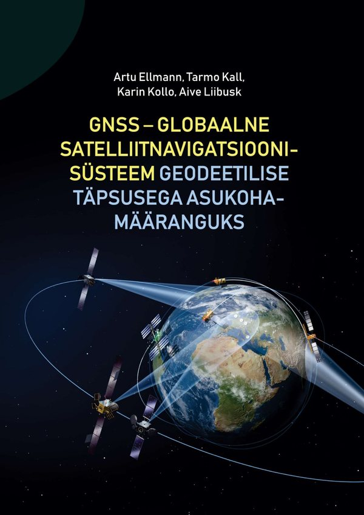

Õppeainest
Õppeaine käsitleb satelliitidel põhinevaid geodeetilisi mõõtmis- ja positsioneerimismeetodeid: GNSS süsteemide (GPS, GLONASS, Galileo, BeiDou) ülesehitust, satelliitide orbiidimehaanikat, signaale ja vaatlussuurusi, koordinaat- ja ajasüsteeme ning GNSS vaatluste töötlemist geodeetilise täpsuse saavutamiseks.
Õppeaine MI.2043 Satelliitgeodeesia on mõeldud EMÜ magistriõppekava „Geodeesia ja ruumiandmete hõive” üliõpilastele. Aine maht on 5 EAP. Õppeaine toimub üks kord õppeaastas sügissemestril sessioonõppe vormis.
Tööriistad
Kepler → ECEF kalkulaatorArvuta GPS satelliidi WGS84 ristkoordinaadid XYZ Kepleri orbiidi elementidest (a, e, i, λ, ω, M), mis on selekteeritud RINEX 3.04 navigatsioonifailist. Kuvab ka vahetulemused ja pööratava 3D joonise satelliidi asukohast.
Tsüklilibisemise laborVii reaalsetesse GPS faasivaatlustesse kunstlik tsükli libisemine ja uuri, millised lineaarkombinatsioonid (L1, L1−P1, LC−PC, LI−PI, LI, Melbourne–Wübbena) selle nähtavaks teevad. Sisaldab hüppe ja müra arvulist võrdlust ning kontrollküsimusi.
GNSS sessioonide planeerijaPlaneeri staatiliste GNSS-mõõtmiste sessioonid: sisesta punktid L-Est97 koordinaatidega, määra võrgu kujundid või lase need automaatselt genereerida ning saa sessioonide jaotus, kestused, võrgu joonis ja nõuete kontroll. Arvestab Rail Baltica geodeesia eritingimuste KP1 võrgu nõudeid.
Materjalid
GNSS – globaalne satelliitnavigatsioonisüsteem geodeetilise täpsusega asukohamääranguksEestikeelne kõrgkooliõpik, mis katab õppeaine kogu ainekava: GNSS süsteemide ülesehituse, signaalid ja vaatlussuurused, koordinaat- ja ajasüsteemid, vigade allikad ning mõõtmis- ja töötlusmeetodid geodeetilise täpsusega asukohamääranguks.

Ellmann, Kall, Kollo, Liibusk · Tartu 2022 · 394 lk · PDF
Loengukonspektid, praktikumide juhendid ja andmefailid lisatakse siia jooksvalt semestri vältel.
<a href="loeng1.pdf">Loeng 1</a>.Kontakt
Õppejõud: Tarmo Kall — küsimused loengus, praktikumis või e-posti teel.
Teadustöö ja publikatsioonid: CV Eesti Teadusinfosüsteemis.